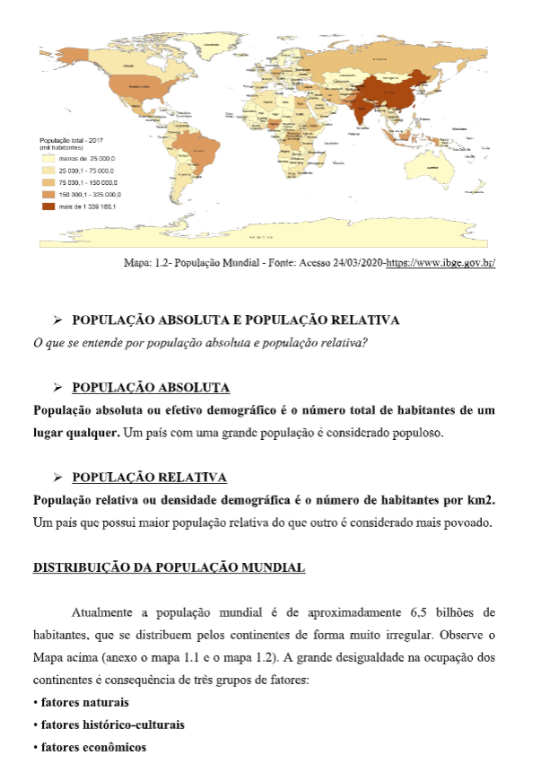
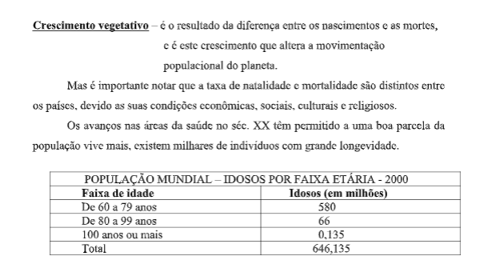
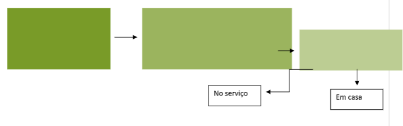
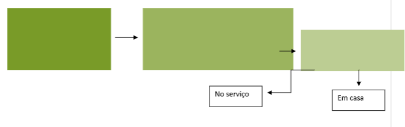

Capítulo 3: Tectônica de placas
Questão:Todos os anos recebemos notícias acerca de terremotos, maremotos e outras catástrofes naturais. No centro do entendimento de tais catástrofes estão as chamadas Placas Tectônicas. Como podemos relacionar a atividade das placas que formam o planeta com os fenômenos naturais?
É a teoria de tectônica global (deformações estruturais geológicas) que se tornou paradigma na geologia moderna, para a compreensão da estrutura, história e dinâmica da crosta terrestre. A teoria baseia-se na observação de que esta camada sólida está dividida em aproximadamente 20 placas semirrígidas. As fronteiras entre estas placas são zonas com atividade tectônica, onde ocorrem mais sismos e erupções vulcânicas.
Além disso, costuma conter fósseis de criaturas terrestres que não poderiam ter nadado de um continente ao outro. Sobre a expansão do fundo do mar, na década de 20, o estudo dos leitos dos mares trouxe evidências de que as dorsais oceânicas são zonas onde se cria a nova crosta oceânica.

O material chega por correntes de convecção de lava quente, mas esfria e solidifica com rapidez, ao contato com a água. Para dar lugar a esta contínua renovação de crosta, as placas devem separar-se, lenta, porém continuamente. Estes movimentos, impulsionados por correntes de convecção térmicas originadas nas profundezas do manto terrestre, provavelmente teriam gerado, ao longo de milhões de anos, o fenômeno da deriva continental.
Na década de 30, começaram os estudos sobre o processo de subducção através do qual a crosta oceânica adentra no manto e se funde. No local onde uma placa tectônica oceânica se subpõe à crosta continental, o magma produzido causa erupção nos vulcões situados ao longo de cadeias montanhosas lineares, as cordilheiras. A zona afetada geralmente situa-se ao longo de uma fossa submarina, a certa distância do continente. Além de criar e alimentar vulcões continentais, a fusão da crosta oceânica subposta é responsável pela formação de alguns tipos de depósitos de minerais metálicos valiosos.

 Manto
Manto
Camada localizada logo abaixo da crosta terrestre e estende-se até quase a metade do raio da Terra. É formada por vários tipos de rochas que, devido às altas temperaturas, encontram-se no estado pastoso e recebem o nome de magma.
NúcleoÉ a camada mais interna do planeta e representa cerca de 1/3 de toda a massa da Terra. Possui temperaturas altíssimas e acredita-se que seja formado por metais como ferro e níquel, entre outros elementos. Para que o estudo da história natural do planeta fosse realizado, dividiu-se sua idade em eras, períodos, épocas, idades e fases. A tabela abaixo nos dá uma ideia dos principais acontecimentos de cada era.
Escalas geológicas do tempo O TEMPO GEOLÓGICO
O TEMPO GEOLÓGICO
Quando pensamos na expectativa de vida do ser humano (dependendo da região do planeta, pode variara entre 50 e 85 anos), fica difícil imaginarmos que a idade calculada do planeta é de aproximadamente 4.5 bilhões de anos. Porém, é importante conhecermos essa história, pois poderemos entender melhor a trajetória da existência de tudo que compõem a Terra, inclusive a espécie humana. Para o estabelecimento de um período de tempo tão longo, usamos o tempo geológico. Nesse sentido, torna-se muito importante o estudo das rochas, fiéis depositários dos registros internos (exemplos: vulcanismos e tectonismo) e externos (exemplos: ação dos ventos, da água e dos seres vivos), que são os construtores do modelado terrestre. Com base no conhecimento do tempo geológico, foi criada uma tabela que estabelece um parâmetro dos eventos que ocorreram a partir do surgimento da Terra, como a que segue abaixo:

Para pensar geograficamente:
Imagine que o homem pudesse chegar ao núcleo da Terra e você foi um dos escolhidos para participar dessa viagem. Utilizando as informações e imagens estudadas até aqui, crie um pequeno texto onde você descreva o que você veria se tal viagem fosse possível.
 
